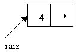

Una lista es un conjunto de nodos, cada uno de los cuales tiene dos campos: uno de información y un apuntador al siguiente nodo de la lista. Además un apuntador externo señala el primer nodo de la lista.
Representación gráfica de un nodo:

La información puede ser cualquier tipo de dato simple, estructura de datos o inclusive uno o más objetos.
La dirección al siguiente nodo es un puntero.
Representación gráfica de una lista:

Como decíamos, una lista es una secuencia de nodos (en este caso cuatro nodos). La información de los nodos en este caso es un entero y siempre contiene un puntero que guarda la dirección del siguiente nodo.
raiz es otro puntero externo a la lista que contiene la dirección del primer nodo.
El estado de una lista varía durante la ejecución del programa:

De esta forma representamos gráficamente una lista vacía.
Si insertamos un nodo en la lista quedaría luego:
Si insertamos otro nodo al principio con el valor 9 tenemos:

Lo mismo podemos borrar nodos de cualquier parte de la lista.
Esto nos trae a la mente el primer problema planteado: el desarrollo del procesador de texto. Podríamos utilizar una lista que inicialmente estuviera vacía e introdujéramos un nuevo nodo con cada línea que tipea el operador. Con esta estructura haremos un uso muy eficiente de la memoria.
Tipos de listas.
Según el mecanismo de inserción y extracción de nodos en la lista tenemos los siguientes tipos:
- Listas tipo pila.
- Listas tipo cola.
- Listas genéricas.
Una lista se comporta como una pila si las inserciones y extracciones las hacemos por un mismo lado de la lista. También se las llama listas LIFO (Last In First Out - último en entrar primero en salir)
Una lista se comporta como una cola si las inserciones las hacemos al final y las extracciones las hacemos por el frente de la lista. También se las llama listas FIFO (First In First Out - primero en entrar primero en salir)
Una lista se comporta como genérica cuando las inserciones y extracciones se realizan en cualquier parte de la lista.
Podemos en algún momento insertar un nodo en medio de la lista, en otro momento al final, borrar uno del frente, borrar uno del fondo o uno interior, etc.